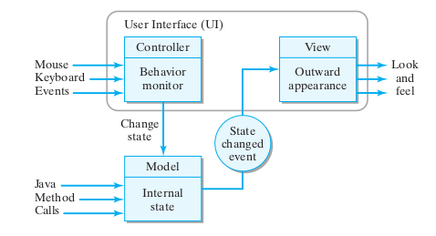
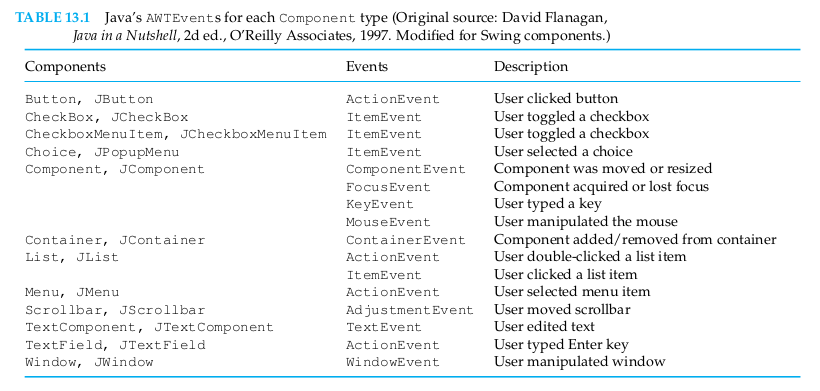
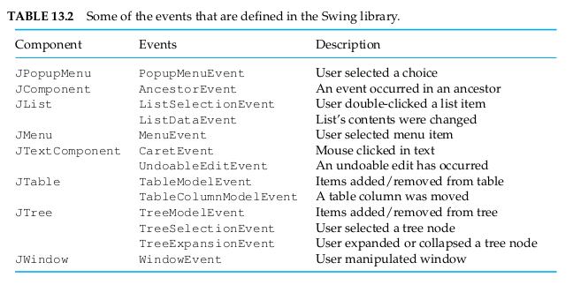
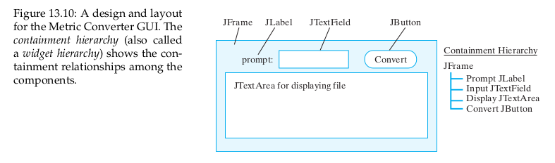

<!DOCTYPE html>
<!--
==============================================================================
           "GitHub HTML5 Pandoc Template" v2.1 — by Tristano Ajmone           
==============================================================================
Copyright © Tristano Ajmone, 2017, MIT License (MIT). Project's home:

- https://github.com/tajmone/pandoc-goodies

The CSS in this template reuses source code taken from the following projects:

- GitHub Markdown CSS: Copyright © Sindre Sorhus, MIT License (MIT):
  https://github.com/sindresorhus/github-markdown-css

- Primer CSS: Copyright © 2016-2017 GitHub Inc., MIT License (MIT):
  http://primercss.io/

~~~~~~~~~~~~~~~~~~~~~~~~~~~~~~~~~~~~~~~~~~~~~~~~~~~~~~~~~~~~~~~~~~~~~~~~~~~~~~
The MIT License 

Copyright (c) Tristano Ajmone, 2017 (github.com/tajmone/pandoc-goodies)
Copyright (c) Sindre Sorhus <sindresorhus@gmail.com> (sindresorhus.com)
Copyright (c) 2017 GitHub Inc.

"GitHub Pandoc HTML5 Template" is Copyright (c) Tristano Ajmone, 2017, released
under the MIT License (MIT); it contains readaptations of substantial portions
of the following third party softwares:

(1) "GitHub Markdown CSS", Copyright (c) Sindre Sorhus, MIT License (MIT).
(2) "Primer CSS", Copyright (c) 2016 GitHub Inc., MIT License (MIT).

Permission is hereby granted, free of charge, to any person obtaining a copy
of this software and associated documentation files (the "Software"), to deal
in the Software without restriction, including without limitation the rights
to use, copy, modify, merge, publish, distribute, sublicense, and/or sell
copies of the Software, and to permit persons to whom the Software is
furnished to do so, subject to the following conditions:

The above copyright notice and this permission notice shall be included in all
copies or substantial portions of the Software.

THE SOFTWARE IS PROVIDED "AS IS", WITHOUT WARRANTY OF ANY KIND, EXPRESS OR
IMPLIED, INCLUDING BUT NOT LIMITED TO THE WARRANTIES OF MERCHANTABILITY,
FITNESS FOR A PARTICULAR PURPOSE AND NONINFRINGEMENT. IN NO EVENT SHALL THE
AUTHORS OR COPYRIGHT HOLDERS BE LIABLE FOR ANY CLAIM, DAMAGES OR OTHER
LIABILITY, WHETHER IN AN ACTION OF CONTRACT, TORT OR OTHERWISE, ARISING FROM,
OUT OF OR IN CONNECTION WITH THE SOFTWARE OR THE USE OR OTHER DEALINGS IN THE
SOFTWARE.
==============================================================================-->
<html>
<head>
  <meta charset="utf-8" />
  <meta name="generator" content="pandoc" />
  <meta name="viewport" content="width=device-width, initial-scale=1.0, user-scalable=yes" />
  <meta name="author" content="Mark Lucernas" />
  <meta name="dcterms.date" content="2020-05-04" />
  <title>CISC 190 Module 7</title>
  <style type="text/css">
@charset "UTF-8";.markdown-body{-ms-text-size-adjust:100%;-webkit-text-size-adjust:100%;color:#24292e;font-family:-apple-system,system-ui,BlinkMacSystemFont,"Segoe UI",Helvetica,Arial,sans-serif,"Apple Color Emoji","Segoe UI Emoji","Segoe UI Symbol";font-size:16px;line-height:1.5;word-wrap:break-word;box-sizing:border-box;min-width:200px;max-width:980px;margin:0 auto;padding:45px}.markdown-body a{color:#0366d6;background-color:transparent;text-decoration:none;-webkit-text-decoration-skip:objects}.markdown-body a:active,.markdown-body a:hover{outline-width:0}.markdown-body a:hover{text-decoration:underline}.markdown-body a:not([href]){color:inherit;text-decoration:none}.markdown-body strong{font-weight:600}.markdown-body h1,.markdown-body h2,.markdown-body h3,.markdown-body h4,.markdown-body h5,.markdown-body h6{margin-top:24px;margin-bottom:16px;font-weight:600;line-height:1.25}.markdown-body h1{font-size:2em;margin:.67em 0;padding-bottom:.3em;border-bottom:1px solid #eaecef}.markdown-body h2{padding-bottom:.3em;font-size:1.5em;border-bottom:1px solid #eaecef}.markdown-body h3{font-size:1.25em}.markdown-body h4{font-size:1em}.markdown-body h5{font-size:.875em}.markdown-body h6{font-size:.85em;color:#6a737d}.markdown-body img{border-style:none}.markdown-body svg:not(:root){overflow:hidden}.markdown-body hr{box-sizing:content-box;height:.25em;margin:24px 0;padding:0;overflow:hidden;background-color:#e1e4e8;border:0}.markdown-body hr::before{display:table;content:""}.markdown-body hr::after{display:table;clear:both;content:""}.markdown-body input{margin:0;overflow:visible;font:inherit;font-family:inherit;font-size:inherit;line-height:inherit}.markdown-body [type=checkbox]{box-sizing:border-box;padding:0}.markdown-body *{box-sizing:border-box}.markdown-body blockquote{margin:0}.markdown-body ol,.markdown-body ul{padding-left:2em}.markdown-body ol ol,.markdown-body ul ol{list-style-type:lower-roman}.markdown-body ol ol,.markdown-body ol ul,.markdown-body ul ol,.markdown-body ul ul{margin-top:0;margin-bottom:0}.markdown-body ol ol ol,.markdown-body ol ul ol,.markdown-body ul ol ol,.markdown-body ul ul ol{list-style-type:lower-alpha}.markdown-body li>p{margin-top:16px}.markdown-body li+li{margin-top:.25em}.markdown-body dd{margin-left:0}.markdown-body dl{padding:0}.markdown-body dl dt{padding:0;margin-top:16px;font-size:1em;font-style:italic;font-weight:600}.markdown-body dl dd{padding:0 16px;margin-bottom:16px}.markdown-body code{font-family:SFMono-Regular,Consolas,"Liberation Mono",Menlo,Courier,monospace}.markdown-body pre{font:12px SFMono-Regular,Consolas,"Liberation Mono",Menlo,Courier,monospace;word-wrap:normal}.markdown-body blockquote,.markdown-body dl,.markdown-body ol,.markdown-body p,.markdown-body pre,.markdown-body table,.markdown-body ul{margin-top:0;margin-bottom:16px}.markdown-body blockquote{padding:0 1em;color:#6a737d;border-left:.25em solid #dfe2e5}.markdown-body blockquote>:first-child{margin-top:0}.markdown-body blockquote>:last-child{margin-bottom:0}.markdown-body table{display:block;width:100%;overflow:auto;border-spacing:0;border-collapse:collapse}.markdown-body table th{font-weight:600}.markdown-body table td,.markdown-body table th{padding:6px 13px;border:1px solid #dfe2e5}.markdown-body table tr{background-color:#fff;border-top:1px solid #c6cbd1}.markdown-body table tr:nth-child(2n){background-color:#f6f8fa}.markdown-body img{max-width:100%;box-sizing:content-box;background-color:#fff}.markdown-body code{padding:.2em 0;margin:0;font-size:85%;background-color:rgba(27,31,35,.05);border-radius:3px}.markdown-body code::after,.markdown-body code::before{letter-spacing:-.2em;content:" "}.markdown-body pre>code{padding:0;margin:0;font-size:100%;word-break:normal;white-space:pre;background:0 0;border:0}.markdown-body .highlight{margin-bottom:16px}.markdown-body .highlight pre{margin-bottom:0;word-break:normal}.markdown-body .highlight pre,.markdown-body pre{padding:16px;overflow:auto;font-size:85%;line-height:1.45;background-color:#f6f8fa;border-radius:3px}.markdown-body pre code{display:inline;max-width:auto;padding:0;margin:0;overflow:visible;line-height:inherit;word-wrap:normal;background-color:transparent;border:0}.markdown-body pre code::after,.markdown-body pre code::before{content:normal}.markdown-body .full-commit .btn-outline:not(:disabled):hover{color:#005cc5;border-color:#005cc5}.markdown-body kbd{box-shadow:inset 0 -1px 0 #959da5;display:inline-block;padding:3px 5px;font:11px/10px SFMono-Regular,Consolas,"Liberation Mono",Menlo,Courier,monospace;color:#444d56;vertical-align:middle;background-color:#fcfcfc;border:1px solid #c6cbd1;border-bottom-color:#959da5;border-radius:3px;box-shadow:inset 0 -1px 0 #959da5}.markdown-body :checked+.radio-label{position:relative;z-index:1;border-color:#0366d6}.markdown-body .task-list-item{list-style-type:none}.markdown-body .task-list-item+.task-list-item{margin-top:3px}.markdown-body .task-list-item input{margin:0 .2em .25em -1.6em;vertical-align:middle}.markdown-body::before{display:table;content:""}.markdown-body::after{display:table;clear:both;content:""}.markdown-body>:first-child{margin-top:0!important}.markdown-body>:last-child{margin-bottom:0!important}.Alert,.Error,.Note,.Success,.Warning{padding:11px;margin-bottom:24px;border-style:solid;border-width:1px;border-radius:4px}.Alert p,.Error p,.Note p,.Success p,.Warning p{margin-top:0}.Alert p:last-child,.Error p:last-child,.Note p:last-child,.Success p:last-child,.Warning p:last-child{margin-bottom:0}.Alert{color:#246;background-color:#e2eef9;border-color:#bac6d3}.Warning{color:#4c4a42;background-color:#fff9ea;border-color:#dfd8c2}.Error{color:#911;background-color:#fcdede;border-color:#d2b2b2}.Success{color:#22662c;background-color:#e2f9e5;border-color:#bad3be}.Note{color:#2f363d;background-color:#f6f8fa;border-color:#d5d8da}.Alert h1,.Alert h2,.Alert h3,.Alert h4,.Alert h5,.Alert h6{color:#246;margin-bottom:0}.Warning h1,.Warning h2,.Warning h3,.Warning h4,.Warning h5,.Warning h6{color:#4c4a42;margin-bottom:0}.Error h1,.Error h2,.Error h3,.Error h4,.Error h5,.Error h6{color:#911;margin-bottom:0}.Success h1,.Success h2,.Success h3,.Success h4,.Success h5,.Success h6{color:#22662c;margin-bottom:0}.Note h1,.Note h2,.Note h3,.Note h4,.Note h5,.Note h6{color:#2f363d;margin-bottom:0}.Alert h1:first-child,.Alert h2:first-child,.Alert h3:first-child,.Alert h4:first-child,.Alert h5:first-child,.Alert h6:first-child,.Error h1:first-child,.Error h2:first-child,.Error h3:first-child,.Error h4:first-child,.Error h5:first-child,.Error h6:first-child,.Note h1:first-child,.Note h2:first-child,.Note h3:first-child,.Note h4:first-child,.Note h5:first-child,.Note h6:first-child,.Success h1:first-child,.Success h2:first-child,.Success h3:first-child,.Success h4:first-child,.Success h5:first-child,.Success h6:first-child,.Warning h1:first-child,.Warning h2:first-child,.Warning h3:first-child,.Warning h4:first-child,.Warning h5:first-child,.Warning h6:first-child{margin-top:0}h1.title,p.subtitle{text-align:center}h1.title.followed-by-subtitle{margin-bottom:0}p.subtitle{font-size:1.5em;font-weight:600;line-height:1.25;margin-top:0;margin-bottom:16px;padding-bottom:.3em}div.line-block{white-space:pre-line}
  </style>
  <style type="text/css">code{white-space: pre;}</style>
  <style type="text/css">
a.sourceLine { display: inline-block; line-height: 1.25; }
a.sourceLine { pointer-events: none; color: inherit; text-decoration: inherit; }
a.sourceLine:empty { height: 1.2em; }
.sourceCode { overflow: visible; }
code.sourceCode { white-space: pre; position: relative; }
div.sourceCode { margin: 1em 0; }
pre.sourceCode { margin: 0; }
@media screen {
div.sourceCode { overflow: auto; }
}
@media print {
code.sourceCode { white-space: pre-wrap; }
a.sourceLine { text-indent: -1em; padding-left: 1em; }
}
pre.numberSource a.sourceLine
  { position: relative; left: -4em; }
pre.numberSource a.sourceLine::before
  { content: attr(title);
    position: relative; left: -1em; text-align: right; vertical-align: baseline;
    border: none; pointer-events: all; display: inline-block;
    -webkit-touch-callout: none; -webkit-user-select: none;
    -khtml-user-select: none; -moz-user-select: none;
    -ms-user-select: none; user-select: none;
    padding: 0 4px; width: 4em;
    color: #aaaaaa;
  }
pre.numberSource { margin-left: 3em; border-left: 1px solid #aaaaaa;  padding-left: 4px; }
div.sourceCode
  {  }
@media screen {
a.sourceLine::before { text-decoration: underline; }
}
code span.al { color: #ff0000; font-weight: bold; } /* Alert */
code span.an { color: #60a0b0; font-weight: bold; font-style: italic; } /* Annotation */
code span.at { color: #7d9029; } /* Attribute */
code span.bn { color: #40a070; } /* BaseN */
code span.bu { } /* BuiltIn */
code span.cf { color: #007020; font-weight: bold; } /* ControlFlow */
code span.ch { color: #4070a0; } /* Char */
code span.cn { color: #880000; } /* Constant */
code span.co { color: #60a0b0; font-style: italic; } /* Comment */
code span.cv { color: #60a0b0; font-weight: bold; font-style: italic; } /* CommentVar */
code span.do { color: #ba2121; font-style: italic; } /* Documentation */
code span.dt { color: #902000; } /* DataType */
code span.dv { color: #40a070; } /* DecVal */
code span.er { color: #ff0000; font-weight: bold; } /* Error */
code span.ex { } /* Extension */
code span.fl { color: #40a070; } /* Float */
code span.fu { color: #06287e; } /* Function */
code span.im { } /* Import */
code span.in { color: #60a0b0; font-weight: bold; font-style: italic; } /* Information */
code span.kw { color: #007020; font-weight: bold; } /* Keyword */
code span.op { color: #666666; } /* Operator */
code span.ot { color: #007020; } /* Other */
code span.pp { color: #bc7a00; } /* Preprocessor */
code span.sc { color: #4070a0; } /* SpecialChar */
code span.ss { color: #bb6688; } /* SpecialString */
code span.st { color: #4070a0; } /* String */
code span.va { color: #19177c; } /* Variable */
code span.vs { color: #4070a0; } /* VerbatimString */
code span.wa { color: #60a0b0; font-weight: bold; font-style: italic; } /* Warning */
  </style>
  <link rel="stylesheet" href="style.css">
  <!--[if lt IE 9]>
    <script src="//cdnjs.cloudflare.com/ajax/libs/html5shiv/3.7.3/html5shiv-printshiv.min.js"></script>
  <![endif]-->
</head>
<body>
<article class="markdown-body">
<div style="text-align: center; font-size: 11px; letter-spacing: 2px;">
<a href="../../../index.html">Wiki Root</a>
</div>
<header>
<h1 class="title">CISC 190 Module 7</h1>
<p class="author">Mark Lucernas</p>
<p class="date">2020-05-04</p>
<div class="summary">
Inheritance and Polymorphism
</div>
</header>
<hr>
<nav id="TOC">
<h1 class="toc-title">Contents</h1>
<ul>
<li><a href="#module-7-advanced-topics">Module 7: Advanced Topics</a><ul>
<li><a href="#chapter-11-creating-classes">Chapter 11: Creating Classes</a><ul>
<li><a href="#reusing-a-class-via-inheritance">11.9 Reusing A Class Via Inheritance</a></li>
</ul></li>
<li><a href="#chapter-13-graphical-user-interfaces">Chapter 13: Graphical User Interfaces</a><ul>
<li><a href="#introduction">Introduction</a></li>
<li><a href="#java-guis-from-awt-to-swing">13.2 Java GUIs: From AWT to Swing</a></li>
<li><a href="#the-swing-compoent-set">13.3 The Swing Compoent Set</a></li>
<li><a href="#object-oriented-design-model-view-controller-architecture">13.4 Object-Oriented Design: Model-View-Controller Architecture</a></li>
<li><a href="#the-java-event-model">13.5 The Java Event Model</a></li>
<li><a href="#case-study-designing-a-basic-gui">13.6 CASE STUDY: Designing a Basic GUI</a></li>
<li><a href="#containers-and-layout-managers">13.7 Containers and Layout Managers</a></li>
</ul></li>
</ul></li>
<li><a href="#references">References</a></li>
</ul>
</nav>
<hr>
<h1 id="module-7-advanced-topics">Module 7: Advanced Topics</h1>
<h2 id="chapter-11-creating-classes">Chapter 11: Creating Classes</h2>
<ul>
<li><a href="../../../../files/spring-2020/CISC-190/module-7/java_book_mediaComp_ch-11.pdf">Chapter 11: Creating Classes</a></li>
</ul>
<h3 id="reusing-a-class-via-inheritance">11.9 Reusing A Class Via Inheritance</h3>
<p>In section 11.2.2, we saw that you can specify the parent class when you declare a class using the extends keyword. If you don’t specify the parent class the parent class will be <code>Object</code>.</p>
<p>Usually, the Java Virtual Machine (JVM) will start looking for a method in the class that created the current object. but if we use the keyword <code>super</code> to invoke a method, we will start looking for the method in the <em>parent</em> class of the class that created the current object.</p>
<div class="sourceCode" id="cb1"><pre class="sourceCode java"><code class="sourceCode java"><a class="sourceLine" id="cb1-1" title="1"><span class="kw">public</span> <span class="kw">class</span> ConfusedTurtle <span class="kw">extends</span> Turtle</a>
<a class="sourceLine" id="cb1-2" title="2">{</a>
<a class="sourceLine" id="cb1-3" title="3">  <span class="co">/**</span> Method to turn right <span class="co">(</span>but a confused</a>
<a class="sourceLine" id="cb1-4" title="4">   <span class="co">*</span> turtle will actually turn left<span class="co">)</span></a>
<a class="sourceLine" id="cb1-5" title="5">   <span class="co">*/</span></a>
<a class="sourceLine" id="cb1-6" title="6">  <span class="kw">public</span> <span class="dt">void</span> <span class="fu">turnRight</span>()</a>
<a class="sourceLine" id="cb1-7" title="7">  {</a>
<a class="sourceLine" id="cb1-8" title="8">    <span class="kw">super</span>.<span class="fu">turnLeft</span>();</a>
<a class="sourceLine" id="cb1-9" title="9">  }</a>
<a class="sourceLine" id="cb1-10" title="10"></a>
<a class="sourceLine" id="cb1-11" title="11">  <span class="co">/**</span> Method to turn left <span class="co">(</span>but a confused</a>
<a class="sourceLine" id="cb1-12" title="12">   <span class="co">*</span> turtle will actually turn right<span class="co">)</span></a>
<a class="sourceLine" id="cb1-13" title="13">   <span class="co">*/</span></a>
<a class="sourceLine" id="cb1-14" title="14">  <span class="kw">public</span> <span class="dt">void</span> <span class="fu">turnLeft</span>()</a>
<a class="sourceLine" id="cb1-15" title="15">  {</a>
<a class="sourceLine" id="cb1-16" title="16">    <span class="kw">super</span>.<span class="fu">turnRight</span>();</a>
<a class="sourceLine" id="cb1-17" title="17">  }</a>
<a class="sourceLine" id="cb1-18" title="18">}</a></code></pre></div>
<p>This will get an error because it doesn’t have a constructor yet.</p>
<blockquote>
<p><code>super()</code> is a call to the parent’s no-argument constructor.</p>
</blockquote>
<div class="sourceCode" id="cb2"><pre class="sourceCode java"><code class="sourceCode java"><a class="sourceLine" id="cb2-1" title="1"><span class="kw">public</span> <span class="kw">class</span> ConfusedTurtle <span class="kw">extends</span> Turtle</a>
<a class="sourceLine" id="cb2-2" title="2">{</a>
<a class="sourceLine" id="cb2-3" title="3">  <span class="co">//////////////////// constructors ////////////////////</span></a>
<a class="sourceLine" id="cb2-4" title="4"></a>
<a class="sourceLine" id="cb2-5" title="5">  <span class="co">/**</span></a>
<a class="sourceLine" id="cb2-6" title="6">   <span class="co">*</span> A constructor that takes a ModelDisplay object</a>
<a class="sourceLine" id="cb2-7" title="7">   <span class="co">* </span><span class="an">@param modelDisplayObj </span>the thing that does the display</a>
<a class="sourceLine" id="cb2-8" title="8">   <span class="co">*/</span></a>
<a class="sourceLine" id="cb2-9" title="9">   <span class="kw">public</span> <span class="fu">ConfusedTurtle</span>(ModelDisplay modelDisplayObj)</a>
<a class="sourceLine" id="cb2-10" title="10">   {</a>
<a class="sourceLine" id="cb2-11" title="11">      <span class="co">// use parent constructor</span></a>
<a class="sourceLine" id="cb2-12" title="12">      <span class="kw">super</span>(modelDisplayObj);</a>
<a class="sourceLine" id="cb2-13" title="13">   }</a>
<a class="sourceLine" id="cb2-14" title="14"></a>
<a class="sourceLine" id="cb2-15" title="15">   <span class="co">//////////////////// methods ////////////////////</span></a>
<a class="sourceLine" id="cb2-16" title="16"></a>
<a class="sourceLine" id="cb2-17" title="17">  <span class="co">/**</span> Method to turn right <span class="co">(</span>but a confused</a>
<a class="sourceLine" id="cb2-18" title="18">   <span class="co">*</span> turtle will actually turn left<span class="co">)</span></a>
<a class="sourceLine" id="cb2-19" title="19">   <span class="co">*/</span></a>
<a class="sourceLine" id="cb2-20" title="20">  <span class="kw">public</span> <span class="dt">void</span> <span class="fu">turnRight</span>()</a>
<a class="sourceLine" id="cb2-21" title="21">  {</a>
<a class="sourceLine" id="cb2-22" title="22">    <span class="kw">super</span>.<span class="fu">turnLeft</span>();</a>
<a class="sourceLine" id="cb2-23" title="23">  }</a>
<a class="sourceLine" id="cb2-24" title="24"></a>
<a class="sourceLine" id="cb2-25" title="25">  <span class="co">/**</span> Method to turn left <span class="co">(</span>but a confused</a>
<a class="sourceLine" id="cb2-26" title="26">   <span class="co">*</span> turtle will actually turn right<span class="co">)</span></a>
<a class="sourceLine" id="cb2-27" title="27">   <span class="co">*/</span></a>
<a class="sourceLine" id="cb2-28" title="28">  <span class="kw">public</span> <span class="dt">void</span> <span class="fu">turnLeft</span>()</a>
<a class="sourceLine" id="cb2-29" title="29">  {</a>
<a class="sourceLine" id="cb2-30" title="30">    <span class="kw">super</span>.<span class="fu">turnRight</span>();</a>
<a class="sourceLine" id="cb2-31" title="31">  }</a>
<a class="sourceLine" id="cb2-32" title="32"></a>
<a class="sourceLine" id="cb2-33" title="33">  <span class="co">/**</span></a>
<a class="sourceLine" id="cb2-34" title="34">   <span class="co">*</span> Method to turn by the passed degrees</a>
<a class="sourceLine" id="cb2-35" title="35">   <span class="co">*</span> <span class="co">(</span>a confused turtle will turn by <span class="co">360</span> <span class="co">-</span> the passed degrees<span class="co">)</span></a>
<a class="sourceLine" id="cb2-36" title="36">   <span class="co">*/</span></a>
<a class="sourceLine" id="cb2-37" title="37">   <span class="kw">public</span> <span class="dt">void</span> <span class="fu">turn</span>(<span class="dt">int</span> degrees)</a>
<a class="sourceLine" id="cb2-38" title="38">   {</a>
<a class="sourceLine" id="cb2-39" title="39">    <span class="kw">super</span>.<span class="fu">turn</span>(<span class="dv">360</span>-degrees);</a>
<a class="sourceLine" id="cb2-40" title="40">   }</a>
<a class="sourceLine" id="cb2-41" title="41">}</a></code></pre></div>
<blockquote>
<p><em>superclass</em> constructor must be the first line of code in a constructor.<br> <code>private</code> methods <em>cannot</em> be inherited.</p>
</blockquote>
<p>Additional <code>visibiility</code> types</p>
<ul>
<li><code>final</code> – Final methods cannot be overridden by the subclass that inherits the method. Also, it means that the Java compiler can bind it to the correct implementation.</li>
</ul>
<h4 id="dynamic-runtime-binding">11.9. Dynamic (Runtime) Binding</h4>
<p>Every object in Java keeps a reference to the class that created it. You can say that an object knows what type it is. When a method is invoked on an object, the Java Virtual Machine (JVM) will always start looking for it in the class that created in method the for looking start will which object, unless you use <code>super.method()</code>, which will start looking for the method in the parent class of the class that contains the currently executing code.</p>
<p>When you declare a variable you can assign an object to it that is of the declared type, <em>or any child of the declared type.</em> So we can declare a variable of the typ Turtle and use it to reference an object of the class ConfusedTurtle.</p>
<p>This will get the same result as before:</p>
<div class="sourceCode" id="cb3"><pre class="sourceCode java"><code class="sourceCode java"><a class="sourceLine" id="cb3-1" title="1">World world = <span class="kw">new</span> <span class="fu">World</span>();</a>
<a class="sourceLine" id="cb3-2" title="2">Turtle fred = <span class="kw">new</span> <span class="fu">ConfusedTurtle</span>(world);</a>
<a class="sourceLine" id="cb3-3" title="3">fred.<span class="fu">turn</span>(<span class="dv">90</span>);</a></code></pre></div>
<h2 id="chapter-13-graphical-user-interfaces">Chapter 13: Graphical User Interfaces</h2>
<ul>
<li><a href="../../../../files/spring-2020/CISC-190/java_book_javaJavaJava.pdf">Java, Java, Java Object-Oriented Problem Solving 3rd Ed</a></li>
</ul>
<h3 id="introduction">Introduction</h3>
<p><a name="graphical-user-interface-term"><strong>Graphical user interface (GUI)</strong></a></p>
<ul>
<li>Creates a certain way of interacting with a program visually.</li>
</ul>
<h3 id="java-guis-from-awt-to-swing">13.2 Java GUIs: From AWT to Swing</h3>
<p>Two distinct libraries of GUI components since JDK in 2000.</p>
<ol type="1">
<li><p><a name="abstract-windowing-toolkit-term"><strong>Abstract Windowing Toolkit (AWT)</strong></a></p>
<ul>
<li>AWT has been a part of Java since the original 1.0 version of the JDK 1.0.</li>
<li>Although the original version of the AWT was suitable for developing Java applets, it wasn’t powerful enough to support full-fledged applications. Commonly used programs, such as word processors and spreadsheets, have GUI requirements that were too much for the original AWT.</li>
<li><strong>Dependent on the underlying operating system</strong>.
<ul>
<li>For instance, Java GUI program running on a Windows platform had to depend on Windows code for implementations of its buttons and text fields.</li>
</ul></li>
</ul></li>
<li><p><a name="swing-component-set-term"><strong>Swing component set</strong></a></p>
<ul>
<li>Was first introduce in JDK 1.1 and was extensively revised in JDK 1.2.</li>
<li>Part of the <em>Java Foundation Classes</em> (JFC), a collection of <strong>classes that do not depend as much on the underlying platfrom</strong></li>
<li>Rendered entirely by Java code.</li>
<li>More portable than those which rely on AWT components and the underlying platform.
<ul>
<li>For instance, a program that uses Swing components will have the same look and feel on a Mac, Windows, or Unix platform.</li>
</ul></li>
</ul></li>
</ol>
<h4 id="heavyweight-versus-lightweight-components">13.2.1 Heavyweight Versus Lightweight Components</h4>
<p>AWT components are based on the <strong>peer model</strong>. AWT components are called <em>heavyweight</em> because they depend on the native (peer) system for their drawing and rendering. This is why an AWT button on a Windows platform looks just like a Windows button.</p>
<p>The interaction between Java and the native windowing system requires a good deal of overhead, thereby affecting the overall efficiency of the system.</p>
<p><a name="peer-model-term"><strong>Peer model</strong></a></p>
<ul>
<li>A design in which every AWT component has a corresponding class (a <em>peer</em>) written in the underlying system’s code.</li>
<li>For example, the <code>java.awt.button</code> class has a peer named <code>java.awt.peer.Button</code>, that serves as the interface between the Java code and the computer’s underlying windowing system.</li>
<li>Methods in the peer class are written in so-called <em>native</em> code–that is, non-Java code of the underlying operating system. Therefore, AWT components are inherently platform dependent.</li>
</ul>
<p>By contrast, Swing components is a <strong>lightweight component</strong>.</p>
<p><a name="lightweight-component-term"><strong>Lightweight component</strong></a></p>
<ul>
<li>One that is written entirely in Java.</li>
<li>Because they do not depend on underlying system code, Swing components are more efficient and more portable than corresponding AWT components.</li>
</ul>
<p>Even if a Java program uses Swing components excusively, that will still not break the dependence on the AWT.</p>
<h3 id="the-swing-compoent-set">13.3 The Swing Compoent Set</h3>
<p>Java’s Swing compoents are defined in a collection of packages named <code>javax.swing.*</code>. Swing packages incude the following:</p>
<div class="sourceCode" id="cb4"><pre class="sourceCode java"><code class="sourceCode java"><a class="sourceLine" id="cb4-1" title="1"><span class="kw">import</span> javax.swing.event.*</a>
<a class="sourceLine" id="cb4-2" title="2"><span class="kw">import</span> javax.swing.text.*</a>
<a class="sourceLine" id="cb4-3" title="3"><span class="kw">import</span> javax.swing.plaf.*</a></code></pre></div>
<p>The <code>javax.swing.event</code> package defines the various Swing events and their listeners, such as the <code>Menuevent</code> and the <code>MenyListener</code>. (int the AWT, the AWT events and listeners were defined in <code>java.awt.event</code>.)</p>
<p>The <code>javax.swing.text</code> package contains the classes for <code>JTextField</code> and <code>JTextComponent</code>. The Swing text components are more complex than their AWT counterparts. For example, one of their important features is the ability to undo changes made to the text they contain. This feature is crucial for building sophisticated word-processing applications.</p>
<p>The <code>javax.swing.plaf</code> package contains Swing’s look-and-feel classes. The term <em>plaf</em> is an acronym for <strong>pluggable look and feel</strong>. It refers to the fact that changing application’s look and feel is a simple matter of “plugging in” a different plaf model.</p>
<h3 id="object-oriented-design-model-view-controller-architecture">13.4 Object-Oriented Design: Model-View-Controller Architecture</h3>
<figure>
<figcaption>Figure 13.3 The model-view-controller architecture</figcaption>
</figure>
<p>Java’s Swing components have been implemented using an object-oriented design known as the <strong>model-view-controller (MVC)</strong> model. any Swing component can be considered in terms of three independent aspects: what state it’s in (its model), how it looks (its view), and what it does (its controller).</p>
<p><strong>Model</strong></p>
<ul>
<li>When you click a button, its internal state changes from pressed to unpressed. You’ve also probably seen buttons that were disabled–that is, in a state where they ignore your clicks.</li>
<li>Taken together, such properties constitute the button’s model. Of course, a button’s view–how it looks– depends on its model. When a button is pressed, it has one appearance, and when it is disabled, it has another.</li>
</ul>
<p><strong>View</strong></p>
<ul>
<li>For example, a button’s role is to appear on the interface waiting ot be clicked. When it is clicked, the button’s appearance changes. If you were designing an interface for a button, you would need visual representations for both the clicked and the unclicked button (as well as other possible states).</li>
</ul>
<p><strong>Controller</strong></p>
<ul>
<li>Because a button’s state will change when it is clicked or when it is enabled by the program, some objects needs to keep track of these changes. That part of the component is its controller.</li>
</ul>
<h4 id="pluggable-look-and-feel">13.4.1 Pluggable Look and Feel</h4>
<p>The MVC model uses a clear division of labor to implement a GUI component. The main advantage of this design is the independence between the model, the view, and the controller.</p>
<p>By combining the view and controller into a single class, Swing makes it even easier to change a component’s look and feel. For example, to design your own look and feel for a <code>JButton</code> you would define a class that implemented all of the methods in <code>BasicButtonUI</code>. Of course, this is a job for an experience software developer.</p>
<p>However, if you just want to set your program to use one of the pre-defined look and feel models, you can simply use the <code>UIManager.setLookFeel()</code> method:</p>
<div class="sourceCode" id="cb5"><pre class="sourceCode java"><code class="sourceCode java"><a class="sourceLine" id="cb5-1" title="1"><span class="kw">public</span> <span class="dt">static</span> <span class="dt">void</span> <span class="fu">main</span> (<span class="bu">String</span> args[]) {</a>
<a class="sourceLine" id="cb5-2" title="2">  <span class="kw">try</span> {</a>
<a class="sourceLine" id="cb5-3" title="3">    <span class="bu">UIManager</span>.<span class="fu">setLookAndFeel</span>(</a>
<a class="sourceLine" id="cb5-4" title="4">      <span class="st">&quot;javax.swing.plaf.metal.MetalLookAndFeel&quot;</span>);</a>
<a class="sourceLine" id="cb5-5" title="5">  } <span class="kw">catch</span> (<span class="bu">Exception</span> e) {</a>
<a class="sourceLine" id="cb5-6" title="6">    <span class="bu">System</span>.<span class="fu">out</span>.<span class="fu">err</span>(<span class="st">&quot;Exception: &quot;</span> + e.<span class="fu">getMessage</span>());</a>
<a class="sourceLine" id="cb5-7" title="7">  }</a>
<a class="sourceLine" id="cb5-8" title="8">}</a></code></pre></div>
<h3 id="the-java-event-model">13.5 The Java Event Model</h3>
<p>Every keystroke and mouse click, every time a disk is inserted into a disk drive, an <strong>event</strong> is generated.</p>
<p>When a Java program is running, events generated by the hardware are passed up through the operating system (and through the browser, for applets) to the program. Those events that belong to the program must be handled by the program.</p>
<p>In Java, whenever something happens within a GUI component, an event object is generated and passed to the <em>event listener</em> that has been registered to handle that component’s events.</p>
<p>Suppose you create a <code>JButton</code> in a GUI as follows:</p>
<div class="sourceCode" id="cb6"><pre class="sourceCode java"><code class="sourceCode java"><a class="sourceLine" id="cb6-1" title="1"><span class="kw">private</span> <span class="bu">JButton</span> clickme = <span class="kw">new</span> <span class="bu">JButton</span>(<span class="st">&quot;ClickMe&quot;</span>);</a></code></pre></div>
<p>Whenever the user clicks the <code>JButton</code>, and <code>ActionEvent</code> is generated.</p>
<p>In order to handle these events, the GUI must register the <code>JButton</code> with a listener object that listens for action events. This can be done in an applet’s <code>init()</code> method or in an application’s constructor method, as in this example:</p>
<div class="sourceCode" id="cb7"><pre class="sourceCode java"><code class="sourceCode java"><a class="sourceLine" id="cb7-1" title="1"><span class="kw">public</span> <span class="fu">MyGui</span>() {</a>
<a class="sourceLine" id="cb7-2" title="2">  <span class="co">// Add clickme to the GUI and assign it a listener</span></a>
<a class="sourceLine" id="cb7-3" title="3">  <span class="fu">add</span>(clickme);</a>
<a class="sourceLine" id="cb7-4" title="4">  clickme.<span class="fu">addActionListener</span>(<span class="kw">this</span>);</a>
<a class="sourceLine" id="cb7-5" title="5">}</a></code></pre></div>
<p>In this case, we have designated the GUI itself (this) as an <code>ActionListener</code> for <code>clickme</code>.</p>
<p><a name="listener-term"><strong>Listener</strong></a></p>
<ul>
<li>Is any object that implements a <em>listener interface</em> which is one of the interfaces derived from <code>java.util.EventListener</code></li>
<li>An <code>ActionListener</code> is an object that listens for and receives <code>ActionEvents</code>.</li>
</ul>
<p>In order to complete the event-handling code, the GUI must implement the <code>ActionListener</code> interface.</p>
<p>Here is a simple GUI application that handles action events on a <code>JButton</code>.</p>
<div class="sourceCode" id="cb8"><pre class="sourceCode java"><code class="sourceCode java"><a class="sourceLine" id="cb8-1" title="1"><span class="kw">import</span><span class="im"> javax.swing.*;</span></a>
<a class="sourceLine" id="cb8-2" title="2"><span class="kw">import</span><span class="im"> java.awt.event.*;</span></a>
<a class="sourceLine" id="cb8-3" title="3"></a>
<a class="sourceLine" id="cb8-4" title="4"><span class="kw">public</span> <span class="kw">class</span> MyGUI <span class="kw">extends</span> <span class="bu">JFrame</span> <span class="kw">implements</span> <span class="bu">ActionListener</span> {</a>
<a class="sourceLine" id="cb8-5" title="5">  <span class="kw">private</span> <span class="bu">JButton</span> clickme = <span class="kw">new</span> <span class="bu">JButton</span>(<span class="st">&quot;ClickMe&quot;</span>);</a>
<a class="sourceLine" id="cb8-6" title="6"></a>
<a class="sourceLine" id="cb8-7" title="7">  <span class="kw">public</span> <span class="fu">MyGUI</span>() {</a>
<a class="sourceLine" id="cb8-8" title="8">    <span class="co">// Add clickme to the GUI and assign it a listener</span></a>
<a class="sourceLine" id="cb8-9" title="9">    <span class="fu">getContentPane</span>().<span class="fu">add</span>(clickme);</a>
<a class="sourceLine" id="cb8-10" title="10">    clickme.<span class="fu">addActionListener</span>(<span class="kw">this</span>);</a>
<a class="sourceLine" id="cb8-11" title="11">    <span class="fu">setSize</span>(<span class="dv">200</span>, <span class="dv">200</span>);</a>
<a class="sourceLine" id="cb8-12" title="12">    <span class="fu">setVisible</span>(<span class="kw">true</span>);</a>
<a class="sourceLine" id="cb8-13" title="13">  } <span class="co">// init()</span></a>
<a class="sourceLine" id="cb8-14" title="14">  <span class="kw">public</span> <span class="dt">void</span> <span class="fu">actionPerformed</span>(<span class="bu">ActionEvent</span> e) {</a>
<a class="sourceLine" id="cb8-15" title="15">    <span class="kw">if</span> (e.<span class="fu">getSource</span>() == clickme) {</a>
<a class="sourceLine" id="cb8-16" title="16">      clickme.<span class="fu">setText</span>(clickme.<span class="fu">getText</span>()+<span class="st">&quot;*&quot;</span>);</a>
<a class="sourceLine" id="cb8-17" title="17">    }</a>
<a class="sourceLine" id="cb8-18" title="18">  } <span class="co">//actionPerformed()</span></a>
<a class="sourceLine" id="cb8-19" title="19">  <span class="kw">public</span> <span class="dt">static</span> <span class="dt">void</span> <span class="fu">main</span> (<span class="bu">String</span> args[]) {</a>
<a class="sourceLine" id="cb8-20" title="20">    MyGUI gui = <span class="kw">new</span> <span class="fu">MyGUI</span>();</a>
<a class="sourceLine" id="cb8-21" title="21">  }</a>
<a class="sourceLine" id="cb8-22" title="22">} <span class="co">// MyGUI</span></a></code></pre></div>
<p>Whenever the user click <code>clikcme</code>, that action is encapsulated within <code>ActionEvent</code> object and passed to the <code>actionPerformed()</code> method. For this example, it modifies the button’s label by appending an <strong>asterisk</strong> to it each time it is clicked.</p>
<p>The methods used to handle the <code>ActionEvent</code> are derived from the <code>java.util.EventObject</code> class, the root class for all events. The example uses the <code>getSource()</code> method to get a reference to the object that generated the event.</p>
<p>We can use <code>toString()</code> to see what information is contained in an event object.</p>
<h4 id="event-classes">13.5.1 Event Classes</h4>
<p>Although the event model is the same for both AWT and Swing classes, the Swing package introduces many additional events.</p>
<figure>
<figcaption>Table 13.1</figcaption>
</figure>
<p>Table 13.2 lists events that are new with the Swing classes.</p>
<figure>
<figcaption>Table 13.2</figcaption>
</figure>
<p>Full documentation about these classes and Swing components <a href="http://java.sun.com/j2se/1.5.0/docs/api/">here</a></p>
<h3 id="case-study-designing-a-basic-gui">13.6 CASE STUDY: Designing a Basic GUI</h3>
<h4 id="the-metric-converter-application">13.6.1 The Metric Converter Application</h4>
<div class="sourceCode" id="cb9"><pre class="sourceCode java"><code class="sourceCode java"><a class="sourceLine" id="cb9-1" title="1"><span class="kw">public</span> <span class="kw">class</span> MetricConverter {</a>
<a class="sourceLine" id="cb9-2" title="2">  <span class="kw">public</span> <span class="dt">static</span> <span class="dt">double</span> <span class="fu">milesToKm</span>(<span class="dt">double</span> miles) {</a>
<a class="sourceLine" id="cb9-3" title="3">    <span class="kw">return</span> miles / <span class="fl">0.</span><span class="dv">62</span>;</a>
<a class="sourceLine" id="cb9-4" title="4">  }</a>
<a class="sourceLine" id="cb9-5" title="5">}</a></code></pre></div>
<p>Can be invoked by:</p>
<div class="sourceCode" id="cb10"><pre class="sourceCode java"><code class="sourceCode java"><a class="sourceLine" id="cb10-1" title="1">MetricConverter.<span class="fu">milesToKm</span>(<span class="dv">10</span>);</a></code></pre></div>
<h5 id="choosing-the-components">Choosing the Components</h5>
<p>Let’s now design a GUI to handle the interaction with the user.</p>
<ul>
<li>A <code>JLabel</code> is a display area for a short string of text, an image or both. Its AWT counterpart, the <code>Label</code>, cannot display images. A <code>JLabel</code> does not react to input. Therefore, it is used primarily to display a graphic or small amounts of static text. <strong>Perfectly suited to serve as a prompt</strong>.</li>
<li>A <code>JTextFiled</code> is a component that allows the user to edit a single line of text. It is identical to its AWT counterpart, the <code>TextField</code>. By using its <code>getText()</code> and <code>setText()</code> methods, a <code>JTextField</code> <strong>can be used for either inpur or output, or both</strong>. For this problem, we’ll use it to perform the interface’s input task.</li>
<li>A <code>JTextArea</code> is a multiline text area that can be used for either input or output. It is almost identical to the AWT <code>TextArea</code> component. One difference, howver, is that a <code>JTextArea</code> does not contain scrollbars by default. For this program, we’ll use the <code>JTextArea</code> <strong>for displaying the results of conversions</strong>. Because it is used solely for output in this program, we’ll make it <em>uneditable</em> to prevent the user from typing in it.</li>
<li>A <code>JButton</code> <strong>as our main control for this interface</strong>. By implementing the <code>ActionListener</code> interface we wil handle the user’s action events.</li>
</ul>
<h5 id="choosing-the-top-level-window">Choosing the Top-Level Window</h5>
<p>For applet interfaces, the top-level component would be a <code>JApplet</code>. For Java applications, you would typically use a <code>JFrame</code> as the top-evel window. Both these classes are subclasses of <code>Container</code>, so they are suitable for holding the components that make up of the interface.</p>
<h5 id="designing-a-layout">Designing a Layout</h5>
<figure>
<figcaption>Figure 13.10</figcaption>
</figure>
<p><a name="containment-hierarchy-term"><strong>Containment hierarchy</strong></a></p>
<ul>
<li>Also called a <strong>widget hierarchy</strong>, which shows the containment relationships among the various components.</li>
</ul>
<p>Here is a <code>Converter</code> class that implements a simple GUI interface.</p>
<div class="sourceCode" id="cb11"><pre class="sourceCode java"><code class="sourceCode java"><a class="sourceLine" id="cb11-1" title="1"><span class="kw">import</span><span class="im"> javax.swing.*;</span></a>
<a class="sourceLine" id="cb11-2" title="2"><span class="kw">import</span><span class="im"> java.awt.*;</span></a>
<a class="sourceLine" id="cb11-3" title="3"><span class="kw">import</span><span class="im"> java.awt.event.*;</span></a>
<a class="sourceLine" id="cb11-4" title="4"></a>
<a class="sourceLine" id="cb11-5" title="5"><span class="kw">public</span> <span class="kw">class</span> Converter <span class="kw">extends</span> <span class="bu">JFrame</span> <span class="kw">implements</span> <span class="bu">ActionListener</span> {</a>
<a class="sourceLine" id="cb11-6" title="6">  <span class="kw">private</span> <span class="bu">JLabel</span> prompt = <span class="kw">new</span> <span class="bu">JLabel</span>(<span class="st">&quot;Distance in Miles: &quot;</span>);</a>
<a class="sourceLine" id="cb11-7" title="7">  <span class="kw">private</span> <span class="bu">JTextField</span> input = <span class="kw">new</span> <span class="bu">JTextField</span>(<span class="dv">6</span>);</a>
<a class="sourceLine" id="cb11-8" title="8">  <span class="kw">private</span> <span class="bu">JTextArea</span> display = <span class="kw">new</span> <span class="bu">JTextArea</span>(<span class="dv">10</span>, <span class="dv">20</span>);</a>
<a class="sourceLine" id="cb11-9" title="9">  <span class="kw">private</span> <span class="bu">JButton</span> convert = <span class="kw">new</span> <span class="bu">JButton</span>(<span class="st">&quot;Convert!&quot;</span>);</a>
<a class="sourceLine" id="cb11-10" title="10"></a>
<a class="sourceLine" id="cb11-11" title="11">  <span class="kw">public</span> <span class="fu">Converter</span>() {</a>
<a class="sourceLine" id="cb11-12" title="12">    <span class="fu">getContentPane</span>().<span class="fu">setLayout</span>(<span class="kw">new</span> <span class="bu">FlowLayout</span>());</a>
<a class="sourceLine" id="cb11-13" title="13">    <span class="fu">getContentPane</span>()<span class="fu">add</span>(prompt);</a>
<a class="sourceLine" id="cb11-14" title="14">    <span class="fu">getContentPane</span>()<span class="fu">add</span>(input);</a>
<a class="sourceLine" id="cb11-15" title="15">    <span class="fu">getContentPane</span>()<span class="fu">add</span>(convert);</a>
<a class="sourceLine" id="cb11-16" title="16">    <span class="fu">getContentPane</span>()<span class="fu">add</span>(display);</a>
<a class="sourceLine" id="cb11-17" title="17">    display.<span class="fu">setLineWrap</span>(<span class="kw">true</span>);</a>
<a class="sourceLine" id="cb11-18" title="18">    display.<span class="fu">setEditable</span>(<span class="kw">false</span>);</a>
<a class="sourceLine" id="cb11-19" title="19">    convert.<span class="fu">addActionListener</span>(<span class="kw">this</span>);</a>
<a class="sourceLine" id="cb11-20" title="20">  } <span class="co">// Converter()</span></a>
<a class="sourceLine" id="cb11-21" title="21"></a>
<a class="sourceLine" id="cb11-22" title="22">  <span class="kw">public</span> <span class="dt">void</span> <span class="fu">actionPerformed</span>( <span class="bu">ActionEvent</span> e ) {</a>
<a class="sourceLine" id="cb11-23" title="23">    <span class="dt">double</span> miles =</a>
<a class="sourceLine" id="cb11-24" title="24">      <span class="bu">Double</span>.<span class="fu">valueOf</span>(input.<span class="fu">getText</span>()).<span class="fu">doubleValue</span>();</a>
<a class="sourceLine" id="cb11-25" title="25">    <span class="dt">double</span> km = MetricConverter.<span class="fu">milesToKm</span>(miles);</a>
<a class="sourceLine" id="cb11-26" title="26">    display.<span class="fu">append</span>(miles + <span class="st">&quot; miles equals &quot;</span> + km + <span class="st">&quot; Kilometers</span><span class="sc">\n</span><span class="st">&quot;</span>);</a>
<a class="sourceLine" id="cb11-27" title="27">  } <span class="co">// actionPerformed();</span></a>
<a class="sourceLine" id="cb11-28" title="28"></a>
<a class="sourceLine" id="cb11-29" title="29">  <span class="kw">public</span> <span class="dt">static</span> <span class="dt">void</span> <span class="fu">main</span>(<span class="bu">String</span> args[]) {</a>
<a class="sourceLine" id="cb11-30" title="30">    Converter f = <span class="kw">new</span> <span class="fu">Converter</span>();</a>
<a class="sourceLine" id="cb11-31" title="31">    f.<span class="fu">setSize</span>(<span class="dv">400</span>, <span class="dv">300</span>);</a>
<a class="sourceLine" id="cb11-32" title="32">    f.<span class="fu">setVisible</span>(<span class="kw">true</span>);</a>
<a class="sourceLine" id="cb11-33" title="33">    f.<span class="fu">addWindowListener</span>(<span class="kw">new</span> <span class="bu">WindowAdapter</span>() {</a>
<a class="sourceLine" id="cb11-34" title="34">      <span class="kw">public</span> <span class="dt">void</span> <span class="fu">windowClosing</span>(<span class="bu">WindowEvent</span> e) {</a>
<a class="sourceLine" id="cb11-35" title="35">        <span class="bu">System</span>.<span class="fu">exit</span>(<span class="dv">0</span>); <span class="co">// Quit the application</span></a>
<a class="sourceLine" id="cb11-36" title="36">      }</a>
<a class="sourceLine" id="cb11-37" title="37">    });</a>
<a class="sourceLine" id="cb11-38" title="38">  } <span class="co">// main()</span></a>
<a class="sourceLine" id="cb11-39" title="39">} <span class="co">// Converter</span></a></code></pre></div>
<p><a name="layout-manager-term"><strong>Layout manager</strong></a></p>
<ul>
<li>is the object that is responsible for sizing and arranging components in a containerso that elements are organized in the best possible manner.</li>
<li>A <code>FlowLayout</code> is the simplest arrangement: components are arrange left to right.</li>
</ul>
<p><a name="content-pane-term"><strong>Content pane</strong></a></p>
<ul>
<li>Serves as the working area of the <code>JFrame</code>. It contains all of the frame’s components. Java will raise an exception if you attempt to add a component directly to a <code>JFrame</code>.</li>
</ul>
<blockquote>
<p>A <code>JFrame</code> cannot directly contain GUI elements. Instead, they must be added to its content pane, which can be retrieved using the <code>getContentPane()</code> method.</p>
</blockquote>
<p>Because we are using a <code>FlowLayout</code>, it is especially important to give the frame an appropriate size. Failure to do so can cause the components to be arranged in a confusing way and might even cause some components to not appear in the window.</p>
<h4 id="inner-classes-and-adapter-classes">13.6.2 Inner Classes and Adapter Classes</h4>
<p>Snippet from <code>Converter</code> class above:</p>
<div class="sourceCode" id="cb12"><pre class="sourceCode java"><code class="sourceCode java"><a class="sourceLine" id="cb12-1" title="1">f.<span class="fu">addWindowListener</span>(<span class="kw">new</span> <span class="bu">WindowAdapter</span>() {</a>
<a class="sourceLine" id="cb12-2" title="2">  <span class="kw">public</span> <span class="dt">void</span> <span class="fu">windowClosing</span>(<span class="bu">WindowEvent</span> e) {</a>
<a class="sourceLine" id="cb12-3" title="3">    <span class="bu">System</span>.<span class="fu">exit</span>(<span class="dv">0</span>);</a>
<a class="sourceLine" id="cb12-4" title="4">  }</a>
<a class="sourceLine" id="cb12-5" title="5">});</a></code></pre></div>
<p>This code segment provides a listener that listens for window closing events. When such an event, occurs, it exits the application by calling <code>System.exit()</code>.</p>
<p>The syntax used here is an example of an <em>anonymous inner class</em>.</p>
<p><a name="inner-class-term"><strong>Inner class</strong></a></p>
<ul>
<li>A class that is defined within another class.</li>
</ul>
<p>The syntax is somewhat ugly, because it places the class definition right where a reference to a window listener object would go. In effect what the code is doing is defining a subclass of <code>WindowAdapter</code> and creating an instance of it to serve as a listener for window closing events.</p>
<p>Anonymous inner classes provide a useful way of creating classes and objects on the fly to handle just this kind of listener task. The syntax used actually enables us to write <strong>one expression that both defines a class and creates an instance of it</strong> to listen for window closing events. <strong>It is anonymous, meaning we aren’t giving it a name, so you can’t create other instances of it in the program.</strong></p>
<blockquote>
<p>Note that the subclass has <em>local scope</em> limited only to the <code>main()</code> method.</p>
</blockquote>
<p><a name="adapter-class-term"><strong>Adapter class</strong></a></p>
<ul>
<li>Is a wrapper class that implements trivial version of the abstract methods that make up a particular interface.</li>
</ul>
<p>The WindowAdapter class implements the methods of the <code>WindowListener</code> interface. When you implement an interface, such as <code>ActionListener</code>, you must implement all the abstract methods defined in the interface. For <code>ActionListener</code> there’s just one method, the <code>actionPerformed()</code> method, so we can implement it as part of our applet or frame class. However, we want to use only one of the seven methods available in the <code>WindowListener</code> interface, the <code>windowClosing()</code> method, which is the method implemented in the anonymous inner class:</p>
<div class="sourceCode" id="cb13"><pre class="sourceCode java"><code class="sourceCode java"><a class="sourceLine" id="cb13-1" title="1"><span class="kw">public</span> <span class="dt">void</span> <span class="fu">windowClosing</span>(<span class="bu">WindowEvent</span> e) {</a>
<a class="sourceLine" id="cb13-2" title="2">  <span class="bu">System</span>.<span class="fu">exit</span>(<span class="dv">0</span>);</a>
<a class="sourceLine" id="cb13-3" title="3">}</a></code></pre></div>
<p>The <code>WindowAdapter</code> is defined simply as</p>
<div class="sourceCode" id="cb14"><pre class="sourceCode java"><code class="sourceCode java"><a class="sourceLine" id="cb14-1" title="1"><span class="kw">public</span> <span class="kw">abstract</span> <span class="kw">class</span> <span class="bu">WindowAdapter</span> <span class="kw">implements</span> <span class="bu">WindowListener</span> {</a>
<a class="sourceLine" id="cb14-2" title="2">  <span class="kw">public</span> <span class="dt">void</span> <span class="fu">windowActivated</span>(<span class="bu">WindowEvent</span> e) {}</a>
<a class="sourceLine" id="cb14-3" title="3">  <span class="kw">public</span> <span class="dt">void</span> <span class="fu">windowClosed</span>(<span class="bu">WindowEvent</span> e) {}</a>
<a class="sourceLine" id="cb14-4" title="4">  ...</a>
<a class="sourceLine" id="cb14-5" title="5">  <span class="co">// Five other window listener methods</span></a>
<a class="sourceLine" id="cb14-6" title="6">}</a></code></pre></div>
<p>Note that each method is given a trivial implementation (). To create a subclass of <code>WindowAdapter</code>, you must override at least one of its trivially implemented methods.</p>
<p>Another way to manage the application’s window closing event is to define a subclass of <code>WindowAdapter</code>:</p>
<div class="sourceCode" id="cb15"><pre class="sourceCode java"><code class="sourceCode java"><a class="sourceLine" id="cb15-1" title="1"><span class="kw">import</span><span class="im"> java.swing.*;</span></a>
<a class="sourceLine" id="cb15-2" title="2"><span class="kw">import</span><span class="im"> java.awt.*;</span></a>
<a class="sourceLine" id="cb15-3" title="3"><span class="kw">import</span><span class="im"> java.awt.event.*;</span></a>
<a class="sourceLine" id="cb15-4" title="4"><span class="kw">public</span> <span class="kw">class</span> WindowCloser <span class="kw">extends</span> <span class="bu">WindowAdapter</span> {</a>
<a class="sourceLine" id="cb15-5" title="5">  <span class="kw">public</span> <span class="dt">void</span> <span class="fu">windowClosing</span>(<span class="bu">WindowEvent</span> e) {</a>
<a class="sourceLine" id="cb15-6" title="6">    <span class="bu">System</span>.<span class="fu">exit</span>();</a>
<a class="sourceLine" id="cb15-7" title="7">  }</a>
<a class="sourceLine" id="cb15-8" title="8">}</a></code></pre></div>
<p>Given this class, we can then place the following statement in Converter’s <code>main()</code> method:</p>
<div class="sourceCode" id="cb16"><pre class="sourceCode java"><code class="sourceCode java"><a class="sourceLine" id="cb16-1" title="1">f.<span class="fu">addWindowListener</span>(<span class="kw">new</span> <span class="fu">WindowCloser</span>());</a></code></pre></div>
<h4 id="gui-design-critique">13.6.3 GUI Design Critique</h4>
<p><strong>Critique 1</strong>: Forces the user to manually clear the input</p>
<p><strong>Solution</strong>: Clearing the input text field after displaying the input values</p>
<div class="sourceCode" id="cb17"><pre class="sourceCode java"><code class="sourceCode java"><a class="sourceLine" id="cb17-1" title="1">input.<span class="fu">setText</span>(<span class="st">&quot;&quot;</span>);  <span class="co">// Clear the input field</span></a></code></pre></div>
<p><strong>Critique 2</strong>: Forces the user the switch between the keyboard (for input) and the moouse (for control).</p>
<p><strong>Solution</strong>: Make both the <code>JTextField</code> and the <code>JButton</code> serve as controls. Add an <code>ActionListener</code> to the <code>JTextField</code> during the initialization step:</p>
<div class="sourceCode" id="cb18"><pre class="sourceCode java"><code class="sourceCode java"><a class="sourceLine" id="cb18-1" title="1">input.<span class="fu">addActionListener</span>(<span class="kw">this</span>);</a></code></pre></div>
<p>A <code>JTextField</code> generates an <code>ActionEvent</code> whenever the Enter key is pressed. We don’t even need to modify the <code>actionPerformed()</code> method, since both controls will generate the same action event. This will allow users who prefer the keyboard to use just the keyboard.</p>
<blockquote>
<p>A GUI should aim to minimize the number of different input devices (mouse, keyboard) that the user has to manipulate to perform a particular task.</p>
</blockquote>
<p><a name="desirable-redundancy-term"><strong>Desirable redundancy</strong></a></p>
<ul>
<li>Certain forms of redundancy in an interface, such as two sets of independent controls (mouse and keyboard), make it more flexible or more widely usable program.</li>
</ul>
<h4 id="extending-the-basic-gui-button-array">13.6.4 Extending the Basic GUI: Button Array</h4>
<p>Incorporating a keypad</p>
<p>This new feature will add 12 new <code>JButton</code> components to our interface. Instead of inserting them into the <code>JFrame</code> individually, <strong>it will be better to organize them into a separate panel and to insert the entire panel into the frame as a single unit. This will help reduce the complexity of the display</strong>, especially if the keypad buttons can be grouped together visually. Instead of having to deal with 16 separate components, the user will see the keypad as a single unit with a unified function. This is an example of the abstraction principle, similar to the way we break long strings of numbers (1-888-889-1999) into subgroups to make them easier to remember.</p>
<p>The <code>Keypad</code> will have to define its own class. It will also be a subclass of <code>JPanel</code> and will handle its own <code>ActionEvents</code>.</p>
<p>Create two arrays; One for the 12 keypads and the other is for the labels</p>
<div class="sourceCode" id="cb19"><pre class="sourceCode java"><code class="sourceCode java"><a class="sourceLine" id="cb19-1" title="1"><span class="kw">private</span> <span class="bu">JButton</span> buttons[];</a>
<a class="sourceLine" id="cb19-2" title="2"><span class="kw">private</span> <span class="bu">String</span> labels[] = <span class="co">// and array of button labels</span></a>
<a class="sourceLine" id="cb19-3" title="3">            { <span class="st">&quot;1&quot;</span>, <span class="st">&quot;2&quot;</span>, <span class="st">&quot;3&quot;</span>,</a>
<a class="sourceLine" id="cb19-4" title="4">              <span class="st">&quot;4&quot;</span>, <span class="st">&quot;5&quot;</span>, <span class="st">&quot;6&quot;</span>,</a>
<a class="sourceLine" id="cb19-5" title="5">              <span class="st">&quot;7&quot;</span>, <span class="st">&quot;8&quot;</span>, <span class="st">&quot;9&quot;</span>};</a></code></pre></div>
<p>Loop to instantiate the buttons:</p>
<div class="sourceCode" id="cb20"><pre class="sourceCode java"><code class="sourceCode java"><a class="sourceLine" id="cb20-1" title="1">buttons = <span class="kw">new</span> <span class="bu">JButton</span>[NBUTTONS]; <span class="co">// Create the array</span></a>
<a class="sourceLine" id="cb20-2" title="2"><span class="co">// For each labeled button</span></a>
<a class="sourceLine" id="cb20-3" title="3"><span class="kw">for</span> (<span class="dt">int</span> k = <span class="dv">0</span>;k &lt; buttons.<span class="fu">length</span>; k++) {</a>
<a class="sourceLine" id="cb20-4" title="4">  buttons[k] = <span class="kw">new</span> <span class="bu">JButton</span>(labels[k]); <span class="co">// Create button</span></a>
<a class="sourceLine" id="cb20-5" title="5">  buttons[k].<span class="fu">addActionListener</span>(<span class="kw">this</span>); <span class="co">// and a listener</span></a>
<a class="sourceLine" id="cb20-6" title="6">  <span class="fu">add</span>(buttons[k]); <span class="co">// and add it to the panel</span></a>
<a class="sourceLine" id="cb20-7" title="7">} <span class="co">// for</span></a></code></pre></div>
<p>Because the text area is private to the <code>Converter</code>, the <code>KeyPad</code> does not have direct access to it. The solution for this is to implement a <strong>callback design.</strong> In this design, whenever a <code>KeyPad</code> button is pressed, the <code>KeyPad</code> object calls a method in the <code>Converter</code> that displays the key’s label in the text area.</p>
<p>Note that the association between the <code>Converter</code> and the <code>KeyPad</code> is bi-directional. This means that each object has a reference to the other and can invoke the other’s public methods. This will be effected by having the Converter pass a reference to itself when it constructs the KeyPad: </p>
<div class="sourceCode" id="cb21"><pre class="sourceCode java"><code class="sourceCode java"><a class="sourceLine" id="cb21-1" title="1"><span class="kw">private</span> Keypad keypad = <span class="kw">new</span> <span class="fu">KeyPad</span>(<span class="kw">this</span>);</a></code></pre></div>
<p><code>KeyPad</code> needs to know the name of the callback method and the <code>Converter</code> needs to have an implementation of that method.</p>
<div class="sourceCode" id="cb22"><pre class="sourceCode java"><code class="sourceCode java"><a class="sourceLine" id="cb22-1" title="1"><span class="kw">public</span> <span class="kw">abstract</span> <span class="kw">interface</span> KeyPadClient {</a>
<a class="sourceLine" id="cb22-2" title="2">  <span class="kw">public</span> <span class="dt">void</span> <span class="fu">keypressCallback</span>(<span class="bu">String</span> s);</a>
<a class="sourceLine" id="cb22-3" title="3">}</a></code></pre></div>
<ul>
<li><a href="https://www.youtube.com/watch?v=2aQ9Y7bumts">VIDEO: Abstract Classes vs Interfaces (Java)</a></li>
</ul>
<p>Now the <code>KeyPad</code> can interact with any class that implements the <code>KeyPadClient</code> interface. Note that the <code>KeyPad</code> has a reference to the <code>KeyPadClient</code>, which it will use to invoke <code>keypressCallback()</code> method.</p>
<p><code>KeyPad</code> object implementation:</p>
<div class="sourceCode" id="cb23"><pre class="sourceCode java"><code class="sourceCode java"><a class="sourceLine" id="cb23-1" title="1"><span class="kw">import</span><span class="im"> java.awt.*;</span></a>
<a class="sourceLine" id="cb23-2" title="2"><span class="kw">import</span><span class="im"> java.awt.event.*;</span></a>
<a class="sourceLine" id="cb23-3" title="3"><span class="kw">import</span><span class="im"> javax.swing.*;</span></a>
<a class="sourceLine" id="cb23-4" title="4"></a>
<a class="sourceLine" id="cb23-5" title="5"><span class="kw">public</span> <span class="kw">class</span> KeyPad <span class="kw">extends</span> <span class="bu">JPanel</span> <span class="kw">implements</span> <span class="bu">ActionListener</span> {</a>
<a class="sourceLine" id="cb23-6" title="6">  <span class="kw">private</span> <span class="dt">final</span> <span class="dt">static</span> <span class="dt">int</span> NBUTTONS = <span class="dv">12</span>;</a>
<a class="sourceLine" id="cb23-7" title="7">  <span class="kw">private</span> KeyPadClient kpc; <span class="co">// Owner of the KeyPad</span></a>
<a class="sourceLine" id="cb23-8" title="8">  <span class="kw">private</span> <span class="bu">JButton</span> buttons[];</a>
<a class="sourceLine" id="cb23-9" title="9">  <span class="kw">private</span> <span class="bu">String</span> labels[] = <span class="co">// and array of button labels</span></a>
<a class="sourceLine" id="cb23-10" title="10">              { <span class="st">&quot;1&quot;</span>, <span class="st">&quot;2&quot;</span>, <span class="st">&quot;3&quot;</span>,</a>
<a class="sourceLine" id="cb23-11" title="11">                <span class="st">&quot;4&quot;</span>, <span class="st">&quot;5&quot;</span>, <span class="st">&quot;6&quot;</span>,</a>
<a class="sourceLine" id="cb23-12" title="12">                <span class="st">&quot;7&quot;</span>, <span class="st">&quot;8&quot;</span>, <span class="st">&quot;9&quot;</span>};</a>
<a class="sourceLine" id="cb23-13" title="13"></a>
<a class="sourceLine" id="cb23-14" title="14">  <span class="kw">public</span> <span class="fu">KeyPad</span>(KeyPadClient kpc) {</a>
<a class="sourceLine" id="cb23-15" title="15">    <span class="kw">this</span>.<span class="fu">kpc</span> = kpc;</a>
<a class="sourceLine" id="cb23-16" title="16">    buttons = <span class="kw">new</span> <span class="bu">JButton</span>[NBUTTONS]; <span class="co">// Create the array</span></a>
<a class="sourceLine" id="cb23-17" title="17">    <span class="co">// For each labeled button</span></a>
<a class="sourceLine" id="cb23-18" title="18">    <span class="kw">for</span> (<span class="dt">int</span> k = <span class="dv">0</span>;k &lt; buttons.<span class="fu">length</span>; k++) {</a>
<a class="sourceLine" id="cb23-19" title="19">      buttons[k] = <span class="kw">new</span> <span class="bu">JButton</span>(labels[k]); <span class="co">// Create button</span></a>
<a class="sourceLine" id="cb23-20" title="20">      buttons[k].<span class="fu">addActionListener</span>(<span class="kw">this</span>); <span class="co">// and a listener</span></a>
<a class="sourceLine" id="cb23-21" title="21">      <span class="fu">add</span>(buttons[k]); <span class="co">// and add it to the panel</span></a>
<a class="sourceLine" id="cb23-22" title="22">    } <span class="co">// for</span></a>
<a class="sourceLine" id="cb23-23" title="23">  } <span class="co">// KeyPad()</span></a>
<a class="sourceLine" id="cb23-24" title="24"></a>
<a class="sourceLine" id="cb23-25" title="25">  <span class="kw">public</span> <span class="dt">void</span> <span class="fu">actionPerformed</span>(<span class="bu">ActionEvent</span> e) {</a>
<a class="sourceLine" id="cb23-26" title="26">    <span class="bu">String</span> keylabel = ((<span class="bu">JButton</span>)e.<span class="fu">getSource</span>()).<span class="fu">getText</span>();</a>
<a class="sourceLine" id="cb23-27" title="27">    kpc.<span class="fu">keypressCallback</span>(keylabel);</a>
<a class="sourceLine" id="cb23-28" title="28">  } <span class="co">// actionPerformed()</span></a>
<a class="sourceLine" id="cb23-29" title="29">} <span class="co">// KeyPad</span></a></code></pre></div>
<p>Re-implement <code>Converter</code> class to include <code>KeyPadClient</code> interface, which means it must provide an implementation of the <code>keypressCallback()</code> method:</p>
<div class="sourceCode" id="cb24"><pre class="sourceCode java"><code class="sourceCode java"><a class="sourceLine" id="cb24-1" title="1"><span class="kw">public</span> <span class="dt">void</span> <span class="fu">keypressCallback</span>(<span class="bu">String</span> s) {</a>
<a class="sourceLine" id="cb24-2" title="2">  <span class="kw">if</span> (s.<span class="fu">equals</span>(<span class="st">&quot;C&quot;</span>))</a>
<a class="sourceLine" id="cb24-3" title="3">    input.<span class="fu">setText</span>(<span class="st">&quot;&quot;</span>);</a>
<a class="sourceLine" id="cb24-4" title="4">  <span class="kw">else</span></a>
<a class="sourceLine" id="cb24-5" title="5">    input.<span class="fu">setText</span>(input.<span class="fu">getText</span>() + s);</a>
<a class="sourceLine" id="cb24-6" title="6">} <span class="co">// keypressCallBack()</span></a></code></pre></div>
<h3 id="containers-and-layout-managers">13.7 Containers and Layout Managers</h3>
<p>Second version of the <code>Converter</code> class, which implements the <code>KeyPadClient</code></p>
<div class="sourceCode" id="cb25"><pre class="sourceCode java"><code class="sourceCode java"><a class="sourceLine" id="cb25-1" title="1"><span class="kw">import</span><span class="im"> javax.swing.*;</span></a>
<a class="sourceLine" id="cb25-2" title="2"><span class="kw">import</span><span class="im"> java.awt.*;</span></a>
<a class="sourceLine" id="cb25-3" title="3"><span class="kw">import</span><span class="im"> java.awt.event.*;</span></a>
<a class="sourceLine" id="cb25-4" title="4"></a>
<a class="sourceLine" id="cb25-5" title="5"><span class="kw">public</span> <span class="kw">class</span> Converter <span class="kw">extends</span> <span class="bu">JFrame</span>  <span class="co">// Version 2</span></a>
<a class="sourceLine" id="cb25-6" title="6">                  <span class="kw">implements</span> <span class="bu">ActionListener</span>, KeyPadClient {</a>
<a class="sourceLine" id="cb25-7" title="7"></a>
<a class="sourceLine" id="cb25-8" title="8">  <span class="kw">private</span> <span class="bu">JLabel</span> prompt = <span class="kw">new</span> <span class="bu">JLabel</span>(<span class="st">&quot;Distance in Miles: &quot;</span>);</a>
<a class="sourceLine" id="cb25-9" title="9">  <span class="kw">private</span> <span class="bu">JTextField</span> input = <span class="kw">new</span> <span class="bu">JTextField</span>(<span class="dv">6</span>);</a>
<a class="sourceLine" id="cb25-10" title="10">  <span class="kw">private</span> <span class="bu">JTextArea</span> display = <span class="kw">new</span> <span class="bu">JTextArea</span>(<span class="dv">10</span>, <span class="dv">20</span>);</a>
<a class="sourceLine" id="cb25-11" title="11">  <span class="kw">private</span> <span class="bu">JButton</span> convert = <span class="kw">new</span> <span class="bu">JButton</span>(<span class="st">&quot;Convert!&quot;</span>);</a>
<a class="sourceLine" id="cb25-12" title="12"></a>
<a class="sourceLine" id="cb25-13" title="13">  <span class="kw">public</span> <span class="fu">Converter</span>() {</a>
<a class="sourceLine" id="cb25-14" title="14">    <span class="fu">getContentPane</span>().<span class="fu">setLayout</span>(<span class="kw">new</span> <span class="bu">FlowLayout</span>());</a>
<a class="sourceLine" id="cb25-15" title="15">    <span class="fu">getContentPane</span>().<span class="fu">add</span>(prompt);</a>
<a class="sourceLine" id="cb25-16" title="16">    <span class="fu">getContentPane</span>().<span class="fu">add</span>(input);</a>
<a class="sourceLine" id="cb25-17" title="17">    <span class="fu">getContentPane</span>().<span class="fu">add</span>(convert);</a>
<a class="sourceLine" id="cb25-18" title="18">    <span class="fu">getContentPane</span>().<span class="fu">add</span>(display);</a>
<a class="sourceLine" id="cb25-19" title="19">    display.<span class="fu">setLineWrap</span>(<span class="kw">true</span>);</a>
<a class="sourceLine" id="cb25-20" title="20">    display.<span class="fu">setEditable</span>(<span class="kw">false</span>);</a>
<a class="sourceLine" id="cb25-21" title="21">    convert.<span class="fu">addActionListener</span>(<span class="kw">this</span>);</a>
<a class="sourceLine" id="cb25-22" title="22">    input.<span class="fu">addActionListener</span>(<span class="kw">this</span>);</a>
<a class="sourceLine" id="cb25-23" title="23">  } <span class="co">// Converter()</span></a>
<a class="sourceLine" id="cb25-24" title="24"></a>
<a class="sourceLine" id="cb25-25" title="25">  <span class="kw">public</span> <span class="dt">void</span> <span class="fu">actionPerformed</span>( <span class="bu">ActionEvent</span> e ) {</a>
<a class="sourceLine" id="cb25-26" title="26">    <span class="dt">double</span> miles =</a>
<a class="sourceLine" id="cb25-27" title="27">      <span class="bu">Double</span>.<span class="fu">valueOf</span>(input.<span class="fu">getText</span>()).<span class="fu">doubleValue</span>();</a>
<a class="sourceLine" id="cb25-28" title="28">    <span class="dt">double</span> km = MetricConverter.<span class="fu">milesToKm</span>(miles);</a>
<a class="sourceLine" id="cb25-29" title="29">    display.<span class="fu">append</span>(miles + <span class="st">&quot; miles equals &quot;</span> + km + <span class="st">&quot; Kilometers</span><span class="sc">\n</span><span class="st">&quot;</span>);</a>
<a class="sourceLine" id="cb25-30" title="30">  } <span class="co">// actionPerformed();</span></a>
<a class="sourceLine" id="cb25-31" title="31"></a>
<a class="sourceLine" id="cb25-32" title="32">  <span class="kw">public</span> <span class="dt">void</span> <span class="fu">keypressCallback</span>(<span class="bu">String</span> s) {</a>
<a class="sourceLine" id="cb25-33" title="33">    <span class="kw">if</span> (s.<span class="fu">equals</span>(<span class="st">&quot;C&quot;</span>))</a>
<a class="sourceLine" id="cb25-34" title="34">      input.<span class="fu">setText</span>(<span class="st">&quot;&quot;</span>);</a>
<a class="sourceLine" id="cb25-35" title="35">    <span class="kw">else</span></a>
<a class="sourceLine" id="cb25-36" title="36">      input.<span class="fu">setText</span>(input.<span class="fu">getText</span>() + s);</a>
<a class="sourceLine" id="cb25-37" title="37">  } <span class="co">// keypressCallBack()</span></a>
<a class="sourceLine" id="cb25-38" title="38"></a>
<a class="sourceLine" id="cb25-39" title="39">  <span class="kw">public</span> <span class="dt">static</span> <span class="dt">void</span> <span class="fu">main</span>(<span class="bu">String</span> args[]) {</a>
<a class="sourceLine" id="cb25-40" title="40">    Converter f = <span class="kw">new</span> <span class="fu">Converter</span>();</a>
<a class="sourceLine" id="cb25-41" title="41">    f.<span class="fu">setSize</span>(<span class="dv">400</span>, <span class="dv">300</span>);</a>
<a class="sourceLine" id="cb25-42" title="42">    f.<span class="fu">setVisible</span>(<span class="kw">true</span>);</a>
<a class="sourceLine" id="cb25-43" title="43">    f.<span class="fu">addWindowListener</span>(<span class="kw">new</span> <span class="bu">WindowAdapter</span>() {</a>
<a class="sourceLine" id="cb25-44" title="44">      <span class="kw">public</span> <span class="dt">void</span> <span class="fu">windowClosing</span>(<span class="bu">WindowEvent</span> e) {</a>
<a class="sourceLine" id="cb25-45" title="45">        <span class="bu">System</span>.<span class="fu">exit</span>(<span class="dv">0</span>); <span class="co">// Quit the application</span></a>
<a class="sourceLine" id="cb25-46" title="46">      }</a>
<a class="sourceLine" id="cb25-47" title="47">    });</a>
<a class="sourceLine" id="cb25-48" title="48">  } <span class="co">// main()</span></a>
<a class="sourceLine" id="cb25-49" title="49">} <span class="co">// Converter</span></a></code></pre></div>
<p><br></p>
<h1 id="references">References</h1>
<ul>
<li><a href="../../../../files/spring-2020/CISC-190/module-7/java_book_mediaComp_ch-11.pdf">Chapter 11: Creating Classes</a>
<ul>
<li>Chapter 11.9</li>
</ul></li>
<li><a href="http://www.cs.utexas.edu/~mitra/csSummer2009/cs303/lectures/fileIO.html">File I/O</a></li>
<li><a href="../../../../files/spring-2020/CISC-190/java_book_javaJavaJava.pdf">Java, Java, Java Object-Oriented Problem Solving 3rd Ed</a>
<ul>
<li>Chapter 8, 10, 11, 13</li>
</ul></li>
</ul>
<hr>
<div>
<div style="text-align: center; font-size: 11px; letter-spacing: 2px;">
<a href="../../../index.html">Wiki Root</a>
</div>
</div>
</article>
</body>
</html>
